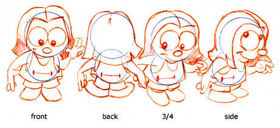
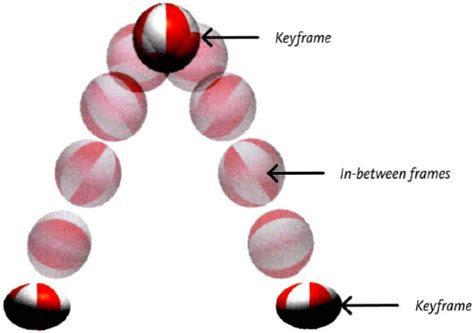
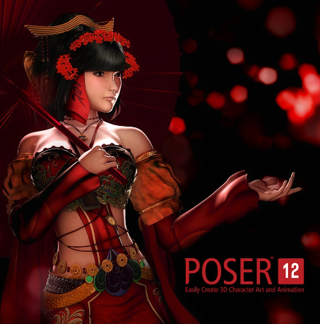
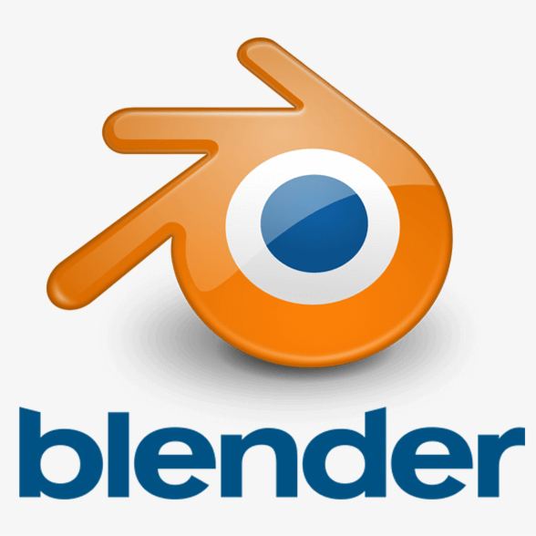
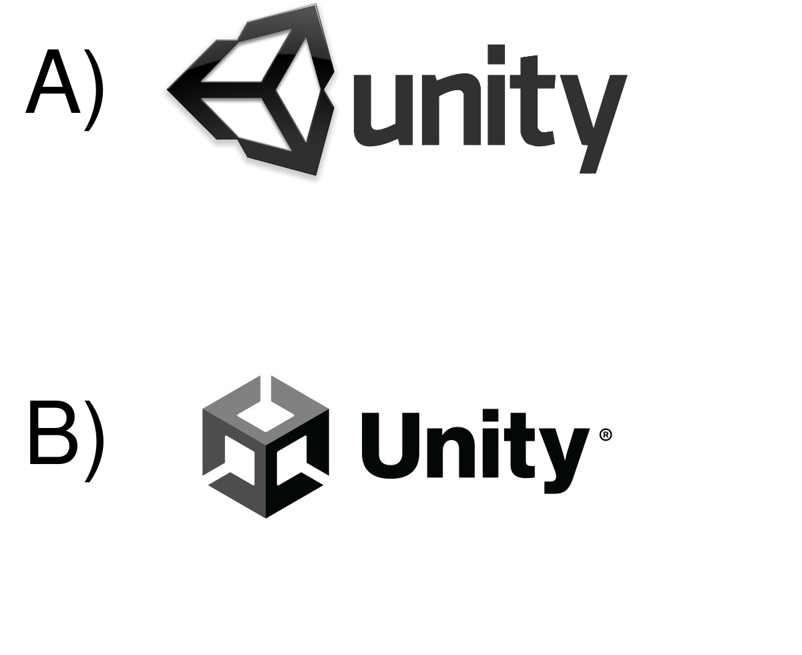

11 Principles of Computer Animation
1. Squash & stretch displays mass by changing form (e.g., during collisions), can be used to show exaggeration and good action flow
2. Timing how actions are spaced according to weight, size, etc, giving appropriate duration to actions
3. Secondary actions support main action, demonstrate reaction
4. Slow in & slow out of poses, show how things move through space (also known as ease in, ease out). For example, a car acceleration/deceleration.
5. Arcs are more natural than straight lines for most motions, show how things move through space due to other forces (e.g., gravity)
6. Follow through/overlapping action Can help to render movement more realistically by more closely obeying the laws of physics.
7. Exaggeration to accentuate important movements or traits
8. Appeal to keep audience interested. By changing pace, sometimes action, sometimes calm.
9. Anticipation set up upcoming actions to inform viewer. For example, horror films.
10. Staging sets up action so audience does not miss it. It is the presentation of an idea so that it is completely and unmistakably clear. An action is staged so that it is understood, a personality so that it is recognizable, an expression so that it can be seen, a mood so that it will affect the audience."
11. Straight ahead: progressing from a starting point and developing the motion continually along the way, versus pose to pose (having key-frames and interpolating intermediate frames). Straight ahead is a term used in animation that refers to a method that uses only the first key pose of a character, and then continues drawing the character to create the desired motion.
Issues concerning Computer Animation:
Simulating Physics [1], [2], [3], [4], and [5]
Designing Aesthetic Actions [7], [8], [6], [1], [2], [3]
Effective Presentation of Actions [9], [10], [2], [3], [7]
Production Technique [11]
Production
- a piece of animation can be broken up into four levels:
1. production:
2. sequence:
3. shot:
4. frame:
1. production: entire project
2. sequence: major episode (usually associated with a single area)
3. shot: continuous camera recording
4. frame: single recorded image

- some steps in creating a production
for an example of animation production process see
-preliminary story created. this includes script, storyboard

· see an example of a storyboard:
- model sheet
develops each physical character from various angles  Notice how the character is draw in the front, profile (side), 3/4 and back views. This is called a CHARACTER ROTATION. · check out these model sheets at
https://www.awn.com/tooninstitute/lessonplan/model.htm - key frames
are created by lead animators so the frames between the key frames can be
interpolated by other animators  Key frames. - scratch
track is recorded (voices for the characters rough sound track) - test shots
are rendered throughout. These rendering are lower quality but offer a good
idea of how everything will fit together - digital can be infinitely replicated
without any resulting image degradation - facilitates manipulation, enables
non-linear manipulation (saves time and money) - discrete data Check out a quick history of computer
generated images (CGI) at: Maya is professional 3D software for creating realistic characters and blockbuster-worthy effects.
·
learn more about Maya at https://www.autodesk.com/products/maya ·
AREA is an online community for the fields of animation, games, film and TV, VFX, design visualization and advertising: http://www.discreet.com/products/3dsmax/ Groups: Social communities focused on products, industries, and specialties. All are welcome to talk about their work as a career, a hobby, or just an enthusiast starting out. Tools, techniques, & career talk. ·
Easily create art and animation with 3D characters:
Poser is a 3D computer graphics program optimized for 3D modeling of human figures. It is known for enabling digital artists to easily produce 3D animations and digital images, as well as the extensive availability of third-party digital content. https://www.posersoftware.com/  Poser is a digital stage that gives you full creative control. Work with 3D figures for any project requiring rendered images or animated video. Drag 3D content right from Poser’s own library of over 5 GB of content onto the stage and into your scene. ·
Blender is a public project hosted on blender.org, licensed as GNU General Public License (GPL, or “free software”), owned by its contributors.
 Blender logo.
A game engine in computer programming is a software framework that can be adapted and modified by the user to satisfy the need of the programmer. It is specifically designed to create video games (VGs) with the support of a diverse set of libraries and other programs. Several tools and components can be reused to build computer games.
One of the most successful game engines created by Epic Games is Unreal Engine. The first time that appeared to the public was in 1998 in the first-person shooter named "Unreal." The engine has seen a wide assortment of games in three dimensions on multiple platforms, such as PC, smartphones, consoles and also in virtual reality. Some well-known video games created by Unreal Engine are Gears of War, Yoshi's Crafted World, Fortnite, and Batman: Arkham City.
Unreal Engine logo. Unreal Engine was declared the most successful video game engine by the Guinness World Records in July 2014.
In computer science, Real-Time Computing (RTC) refers to the process when the hardware and software system's components work together to make the user feel that the response to the user's commands is immediate. Most VGs require real-time computing to operate smoothly so the players can immerse themselves in a virtual environment.
 Unity Technologies logos; A) Former logo. B) Current logo since October 2021.
Godot is another relevant game engine that is available in the market. Developers can create VGs effortlessly with several tools such as Scripting (GDScript, C++, and C#), 3D graphics, and beautiful 2D rendering.
Godot Engine logo: a part of the Software Freedom Conservancy.
Digital versus Analogue
History of Computer Animation
Animation Software
- Bring believable characters to life with engaging animation tools.
- Shape 3D objects and scenes with intuitive modeling tools.
- Create realistic effects—from explosions to cloth simulation.

This license grants people a number of freedoms:
- You are free to use Blender, for any purpose
- You are free to distribute Blender
- You can study how Blender works and change it
- You can distribute changed versions of Blender
For that reason Blender is Free and Open Source software, forever. https://www.blender.org/
Game Engines
A game engine is relevant since it allows programmers to use frameworks that let players input commands. Characters and in-game objects can have (mostly) similar physics to the real ones that people experience on planet Earth. The game engine also renders graphics which envelopes virtual objects so the player can interpret them. If the developer needs extra features, s/he can use scripting in available programming languages to introduce new features. Other characteristics that a game engine can offer are the easiness of creating collision detectors and some aspects of artificial intelligence.
There are several well-known game engines presented as follows:
Unreal Engine
Even though Unreal Engine's core purpose was to design video games, it is currently adopted to create content outside the video game industry. Film and TV making, automotive and transportation, simulation, architecture, and live events are some of the other areas in that Unreal is employed.
Unity
Unity is a game engine launched for the first time in 2005 designed to facilitate development for VG designers. It lets create immersive 2D, 3D, and VR scenarios in which the players can interact.
Unity can compile games for multiple platforms such as iOS, Android, tvOS, Linux, MAC, Windows, PlayStation, Xbox, Nintendo Switch, and VR devices.
Unity's game engine is used in several industries successfully. Some of them are manufacturing, transportation, and the automotive sector; It helps in cinematics, animations, and the film industry; furthermore, it assists architects in the construction area and engineers in modelling machine components.
Godot
The open-source game engine also offers an embedded debugger, augmented and virtual reality support, teamwork capabilities, editing and deployment on diverse platforms, and more.
An advantage of Godot is that there are no royalties; they do not charge subscription fees. Thanks to the MIT license, developers can keep the rights to their creations. Some games developed with Godot are Prepper, Commander Keen in Keen Dreams, Kingdoms of the Dump, Cruelty Squad, and Hardcoded.